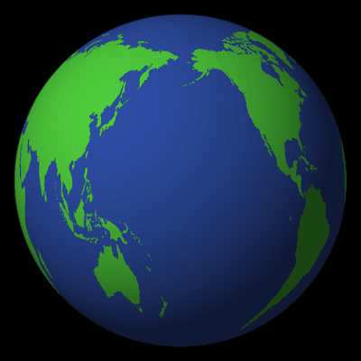
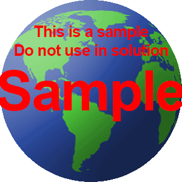

A06: Spinning Globe Animation
用 world-map.png 製作 3D 旋轉地球的動畫 GIF，旋轉方式參考 sample.gif。
成品

成品：48 張、無縫循環的旋轉地球

題目提供的參考動畫
製作方式
- 把 world-map.png 的透明底換成海洋藍，得到完整的等距圓柱投影世界地圖。
- 對畫布上圓形範圍內的每個像素，用正射投影反算球面法線，換算成經緯度後去地圖上取樣。
- 每一張把經度整體偏移
360° / 張數，48 張剛好轉滿一圈，因此循環播放時完全無縫。
- 加上左上前方的簡易光照與邊緣柔化營造立體感，並以 2 倍超取樣後縮圖做抗鋸齒，最後輸出 GIF。
產生成品的完整程式：build.py（Python + NumPy + Pillow）
使用素材
world-map.png：世界地圖（等距圓柱投影）sample.gif：題目提供的參考動畫